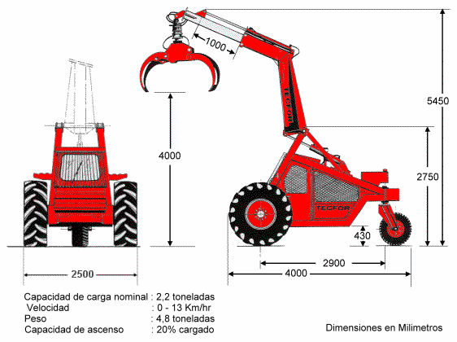

|
FICHA TÉCNICA
TECFOR |
 |
|
Cargador trineumático marca TECFOR , modelo EURO 2.000-D
- cómodo asiento de suspensión hidráulica . - motor diesel Deutz alemán , con consumo de sólo 5 a 6 lts/hr. y larga vida útil . - motores hidráulicos franceses fabricados por PH Poclain Hydraulics , compactos y sin engranajes, con marcha única que permiten desarrollar una velocidad en ambos sentidos de hasta hasta 13 km./hr. - comandos Gresen fabricados en USA , de excelente ergonomía y baja mantención. - rotor hidráulico
sueco Indexator con diferentes tamaños de garra , que le permiten
elegir aquella - mayor capacidad de carga efectiva debido a pluma reforzada . - extensión hidráulica de la pluma con un mayor alcance , si lo requiere el operador. - frenos de emergencia y estacionamiento integrados en motores hidráulicos. - estanque hidráulico independiente para facilitar su manutención y disminuir temperatura interior de cabina ; con respiradero adicional para rápido llenado . - mejorada refrigeración de aceite hidráulico con enfriador Deutz. - acople elástico entre motor diesel y transmisión de mayor vida útil. - mayor protección del motor gracias a triple filtración de aire : ciclónico , primario y de seguridad. - neumáticos para uso forestal. - horquilla
trasera más ancha para permitir el uso de cadenas que protejan
el - llanta trasera con anillo lateral para facilitar el recambio de neumático - tres focos delanteros y uno trasero. - batería
ubicada delante de la cabina , para minimizar riesgo de incendio y facilitar
aire acondicionado con cabina hermética. Garantía : 6 meses o 1.000 horas en uso apropiado , lo que se cumpla antes. Motores
hidráulicos y motor Deutz 1 año o 1.500 hrs.  |
|

|